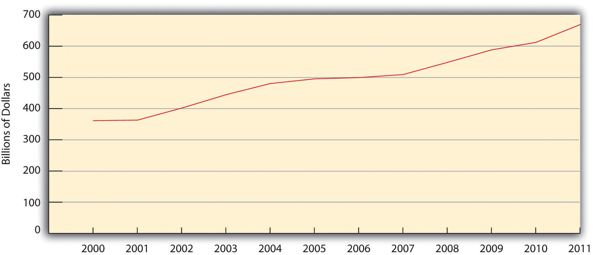

WarSustained armed conflict resulting in large-scale loss of life or extreme material destruction. is “sustained armed conflict” that causes “large-scale loss of life or extreme material destruction” (Worrell, 2011, p. 1).Worrell, M. P. (2011). Why nations go to war: A sociology of military conflict. New York, NY: Routledge. Wars occur both between nations and within nations, when two or more factions engage in armed conflict. War between nations is called international warWar between nations., while war within nations is called civil warWar within nations..
More than 100 million soldiers and civilians are estimated to have died during the international and civil wars of the twentieth century (Leitenberg, 2006).Leitenberg, M. (2006). Deaths in wars and conflicts in the 20th century. Ithaca, NY: Cornell University Peace Studies Program. Although this is almost an unimaginable number, there is cause for some hope, even as there is also cause for despair.
The hope arises from historical evidence that the number of international wars, civil wars, and other types of armed conflict has in fact declined over the centuries, with the number in the past half-century much smaller than in centuries past (Pinker, 2012).Pinker, S. (2012). The better angels of our nature: Why violence has declined. New York, NY: Penguin. Reflecting this decline, a smaller percentage of the world’s population died in armed conflict during the past century than in earlier eras.
To illustrate this trend, compare two periods of history (Pinker, 2012).Pinker, S. (2012). The better angels of our nature: Why violence has declined. New York, NY: Penguin. The first is the thirteenth century, when the Mongol Empire under the initial leadership of Genghis Khan became an empire in Asia and Eastern Europe through wars and conquest in which it killed 40 million people. The second period is 1939–1945, when World War II killed 55 million people. Although 55 million is more than 40 million, the world’s population in the thirteenth century was only one-seventh its population during the World War II period. A quick calculation shows that about 11 percent of the world’s population died from the Mongolian wars, while 2 percent died from World War II. In terms of the risk of dying in war, then, the Mongolian wars were five times more deadly than World War II.
Looking further back in world history, the death rate in prehistoric times from tribal warfare was extremely high. If this high rate had held true during the twentieth century, 2 billion people would have died in twentieth-century wars rather than the 100 million who did die (Pinker, 2012).Pinker, S. (2012). The better angels of our nature: Why violence has declined. New York, NY: Penguin. Although wars, other armed conflicts, terrorism, and genocide certainly continue, and 100 million is a terribly high number of deaths, the world overall is in fact more peaceful now than in the past.
That is the good news and the cause for hope. The cause for despair is twofold. First, war, terrorism, genocide, and other armed conflicts do continue. Even if they are less frequent and less deadly than in the past, that is of little comfort to the tens of millions of people around the world during the past century who died or otherwise suffered in war and other armed conflict and who live in fear today of becoming a victim of armed conflict.
Second, the world today is a much more dangerous place than in the past because of the existence of nuclear weapons. The thirteenth-century Mongolians killed their 40 million with battleaxes and other crude weapons; the World War II deaths resulted from gunfire and conventional bombs. At the end of that war, however, the nuclear age began when the United States dropped two atomic weapons on Japan that killed tens of thousands instantly and tens of thousands more from radiation exposure.
Those two weapons were tiny in both number and size compared to nuclear weapons today. More than 20,000 nuclear warheads now exist; 4,800 are operational and almost 2,000 (held by the United States and Russia) are on high alert, ready to be used at any time (Federation of American Scientists, 2011).Federation of American Scientists. (2011). Status of world nuclear forces. Retrieved February 16, 2012, from http://www.fas.org/programs/ssp/nukes/nuclearweapons/nukestatus.html. Each of these warheads is an average of at least twenty times more powerful than each of the atomic bombs that decimated Japan. The Union of Concerned Scientists (2009)Union of Concerned Scientists. (2009). Nuclear weapons overview. Retrieved February 16, 2012, from http://www.ucsusa.org/nuclear_weapons_and_global_security/nuclear_weapons/technical_issues/nuclear-weapons-overview.html. summarizes their danger bluntly: “Nuclear weapons remain the greatest and most immediate threat to human civilization.” However more peaceful the world is today, it could easily end at any moment.
If we say the history of the United States has been written in war, that is not too much of an exaggeration. The United States, of course, began with the colonial war against England. The American Civil War, also called the War Between the States, then tore it apart less than a century later. Between 1861 and 1865, at least 618,000 and perhaps as many as 750,000 soldiers in both the Union and the Confederacy died on the battlefield or from disease. The minimum estimate almost matches the number of American deaths in all the other wars the United States has fought, and the maximum estimate greatly exceeds this number (see Table 16.2 "US Participation in Major Wars").
Table 16.2 US Participation in Major Wars
| War | Number of troops | Troop deaths | Troops wounded |
|---|---|---|---|
| Revolutionary War | 184,000–250,000 | 4,435 | 6,188 |
| War of 1812 | 286,730 | 2,260 | 4,505 |
| Mexican War | 78,218 | 13,283 | 4,152 |
| Civil War | 3,867,500 | 618,222–750,000 | 412,175 |
| Spanish-American War | 306,760 | 2,446 | 1,662 |
| World War I | 4,734,991 | 116,516 | 204,002 |
| World War II | 16,112,566 | 405,399 | 671,846 |
| Korean War | 5,720,000 | 36,574 | 103,284 |
| Vietnam War | 8,744,000 | 58,209 | 153,303 |
| Persian Gulf War | 2,225,000 | 382 | 467 |
| Iraq and Afghanistan Wars | 2,333,972 | 6,251 | 47,566 |
| Note: Deaths are from combat, disease, and other causes. | |||
Sources: Fischer, H. (2005). American war and military operations casualties: Lists and statistics. Retrieved from http://www.history.navy.mil/library/online/american%20war%20casualty.htm; http://web.archive.org/web/20070711050249/http://www.cwc.lsu.edu/other/stats/warcost.htm; Hacker, J. D. (2011, September 20). New York Times. Retrieved from http://opinionator.blogs.nytimes.com/2011/09/20/recounting-the-dead; US Department of Defense. (2012, May 18). Operation Iraqi Freedom (OIF), Operation New Dawn (OND), and Operation Enduring Freedom (OEF) U.S. Casualty Status. Retrieved from http://www.defense.gov/news/casualty.pdf (accessed February 16, 2012); Martinez, L. (2011, November 11). US veterans: By the numbers. ABC News. Retrieved from http://abcnews.go.com/Politics/us-veterans-numbers/story?id=14928136#1.
The United States has been at war in one-fifth of the years it has existed (Bumiller, 2010).Bumiller, E. (2010, July 25). The war: A trillion can be cheap. New York Times, p. WK3. Between the end of the colonial period and 1993, the US military was involved in at least 234 declared wars, undeclared wars, or other situations abroad involving actual or potential armed conflict (Collier, 1993).Collier, E. C. (1993). Instances of use of United States forces abroad, 1798–1993. Retrieved from http://www.history.navy.mil/wars/foabroad.htm. Since 1993, US armed forces have waged war in Iraq and in Afghanistan and also joined international military operations in such countries as Bosnia, Herzegovina, and Libya. By any measure, then, the US military has played a fundamental role, for better or worse, in the nation’s foreign affairs historically and also today. Supporters of this role say the military has both protected and advanced the political and economic interests of the United States, while critics, as we have seen, charge that the military has been an instrument of imperialism.
The enormity of war has long stimulated scholarly interest in why humans wage war (Levy & Thompson, 2010).Levy, J. S., & Thompson, W. R. (2010). Causes of war. Malden, MA: Wiley-Blackwell. A popular explanation for war derives from evolutionary biology. According to this argument, war is part of our genetic heritage because the humans who survived tens of thousands of years ago were those who were most able, by virtue of their temperament and physicality, to take needed resources from other humans they attacked and to defend themselves from attackers. In this manner, a genetic tendency for physical aggression and warfare developed and thus still exists today. In support of this evolutionary argument, some scientists note that chimpanzees and other primates also engage in group aggression against others of their species (Wrangham, 2004).Wrangham, R. W. (2004). Killer species. Daedalus, 133(4), 25–35.
However, other scientists dispute the evolutionary explanation for several reasons (Begley, 2009).Begley, S. (2009, June 29). Don’t blame the caveman. Newsweek, 52–62. First, the human brain is far more advanced than the brains of other primates, and genetic instincts that might drive these primates’ behavior do not necessarily drive human behavior. Second, many societies studied by anthropologists have been very peaceful, suggesting that a tendency to warfare is more cultural than biological. Third, most people are not violent, and most soldiers have to be resocialized (in boot camp or its equivalent) to overcome their deep moral convictions against killing. If warlike tendencies were part of human genetic heritage, these convictions would not exist.
Scholars have attempted to explain why human beings wage war. A popular explanation comes from the field of evolutionary biology and claims that a tendency toward warfare is hardwired into our genetic heritage because it conferred certain evolutionary advantages.
Image courtesy of Sgt. Joshua Risner, US Army, http://commons.wikimedia.org/wiki/File:US_Army_51817_ BAGHDAD_-_Iraqi_Soldiers,_with_the_6th_IA_Division,_ familiarize_themselves_with_their_targets_and_prepare_ for_a_PKC_machine_gun_range_at_Combat _Outpost_402,_here,_Sept._28._In_addition_to_ marksmanship.jpg.
If warfare is not biological in origin, then it is best understood as a social phenomenon, one that has its roots in the decisions of political and military officials. Sometimes, as with the US entrance into World War II after Pearl Harbor, these decisions are sincere and based on a perceived necessity to defend a nation’s people and resources, and sometimes these decisions are based on cynicism and deceit (Solomon, 2006).Solomon, N. (2006). War made easy: How presidents and pundits keep spinning us to death. Hoboken, NJ: Wiley.
A prime example of this latter dynamic is the Vietnam War. The 1964 Gulf of Tonkin Resolution, in which Congress authorized President Lyndon Johnson to wage an undeclared war in Vietnam, was passed after North Vietnamese torpedo boats allegedly attacked US ships. However, later investigation revealed that the attack never occurred and that the White House lied to Congress and the American people (Wells, 1994).Wells, T. (1994). The war within: America’s battle over Vietnam. Berkeley, CA: University of California Press. Four decades later, questions of deceit were again raised after the United States began the war against Iraq because of its alleged possession of weapons of mass destruction. These weapons were never found, and critics charged that the White House had fabricated and exaggerated evidence of the weapons in order to win public and congressional support for the war (Danner, 2006).Danner, M. (2006). The secret way to war: The Downing Street memo and the Iraq War’s buried history. New York, NY: New York Review of Books.
Although war is a social phenomenon arising from decisions of political and military officials, other phenomena can make it more likely that these officials will decide to go to war. These more basic causes of war include population change and environmental change. As Chapter 15 "Population and the Environment" discussed, population growth may lead to armed conflict of various types, including war, because growing populations need more food, water, and other resources. History shows that when these resources become too scarce within a society, that society is more likely to go to war to wrest these resources from another society (Gleditsch & Theisen, 2010).Gleditsch, N. P., & Theisen, O. M. (2010). Resources, the environment, and conflict. In M. D. Cavelty & V. Mauer (Eds.), The Routledge handbook of security studies (pp. 221–232). New York, NY: Routledge.
Chapter 15 "Population and the Environment" also discussed environmental change as a source of armed conflict, including war (Fisman & Miguel, 2010).Fisman, R., & Miguel, E. (2010). Economic gangsters: Corruption, violence, and the poverty of nations. Princeton, NJ: Princeton University Press. Recall that when weather disasters and other environmental changes cause drought and other problems, crops and other resources become scarcer. Historically, this scarcity has again motivated societies to go to war.
Nations also go to war for ideological reasons: they have certain belief systems that lead them to hold prejudice and other hostile feelings toward nations with different belief systems. Religion is a very important ideology in this regard. Historically and also today, nations in the Middle East and elsewhere have gone to war or are otherwise in conflict because of religious differences. Although the causes of World War II are complex, Hitler’s effort to conquer much of Europe stemmed at least partly from his belief that Aryans (Germans and other Europeans with blond hair and blue eyes) were a superior species and non-Aryans were an inferior species (Bess, 2008).Bess, M. (2008). Choices under fire: Moral dimensions of World War II. New York, NY: Vintage Books.
Table 16.2 "US Participation in Major Wars" listed the hundreds of thousands of troop deaths in American wars. The nation rightly grieved these deaths when they occurred and built monuments, such as the Korean and Vietnam veterans memorials in Washington, DC, that list the names of the dead.
John Tirman, director of the Center for International Studies at the Massachusetts Institute of Technology, worries that Americans have neglected the civilian victims of war. He applauds the Korean and Vietnam memorials in Washington, but he laments that “neither mentions the people of those countries who perished in the conflicts” (Tirman, 2012, p. B01).Tirman, J. (2012, January 8). Do we care when civilians die in war? The Washington Post, p. B01. “When it comes to our wars overseas,” he adds, “concern for the victims is limited to U.S. troops.”
Tirman notes that approximately 6 million civilians and soldiers died in the Korean, Vietnam/Indochina, Iraq, and Afghanistan wars. Most of these victims were civilians, and most of these civilian deaths were the result of actions by the United States and its allies. These deaths stemmed from bombs and other weapons that went astray, from orders by military and political leaders to drop millions upon millions of bombs on civilian areas, and sometimes from atrocities committed by US personnel. In World War II, Tirman adds, the United States dropped two atomic bombs that killed tens of thousands of civilians, and it joined its allies in the carpet bombing of German and Japanese cities that also killed hundreds of thousands.
The two atomic bombs dropped by the United States over Japan during World War II killed tens of thousands of civilians. Scholar John Tirman worries that Americans have generally ignored the civilian victims of US wars.
Source: “Victim of Atomic Bomb of Hiroshima,” Wikipedia, Last modified on October 10, 2011, http://commons.wikimedia.org/wiki/File:Victim_of_Atomic_Bomb_001.jpg.
Tirman (2012)Tirman, J. (2012, January 8). Do we care when civilians die in war? The Washington Post, p. B01. acknowledges that the carpet bombing, atomic bombing, and other actions in World War II that killed hundreds of thousands of civilians may have had strategic purposes, and the morality of these actions remains hotly debated today. But he also notes that the Korean and Vietnam wars included many atrocities committed by American troops against civilians. To be blunt, American troops simply shot untold hundreds of Korean and Vietnamese civilians in cold blood.
Tirman describes one Korean incident in which machine gun fire from US warplanes killed about one hundred civilian refugees who were resting on a road. The remaining several hundred refugees hid and were shot at for three days by US ground soldiers. Tirman (2012, p. 107)Tirman, J. (2012, January 8). Do we care when civilians die in war? The Washington Post, p. B01. writes, “Surviving Koreans from the onslaught described in detail the chaotic panic they experienced; having believed the Americans were protecting them, they then saw the U.S. troops fire indiscriminately at men, women, and children at the scene.” At the end of the three days, about four hundred civilians lay dead.
In Vietnam, Tirman writes, American troops and planes routinely razed villages to the ground, killing villagers indiscriminately, and then evacuated any survivors. Once they were evacuated, their villages were designated “free fire zones,” and then often bombed indiscriminately once again, killing any villagers who managed to remain in these zones despite the evacuations. All these killings were outright slaughter.
In one example of what Tirman (2011, p. 153)Tirman, J. (2011). The deaths of others: The fate of civilians in America’s wars. New York, NY: Oxford University Press. calls a typical massacre, US soldiers arrived at a village that had just been bombed and ordered surviving residents to gather at the center of the town. After they did so, US ground troops shot them and left a pile of dead bodies that included twenty-one children. As this brief discussion indicates, although the massacre of 347 Vietnamese at the hamlet of My Lai is undoubtedly the Vietnam massacre that is best known (and perhaps the only known) to the American public, massacres were far from rare and in fact were rather common.
A central part of US military strategy in Vietnam involved destroying rice fields and the rest of the countryside to make it difficult for the Vietcong forces to engage in guerrilla warfare. To do so, it routinely deployed chemical weapons such as Agent Orange (dioxin, a known carcinogen), napalm, and white phosphorous. Planes sprayed and bombed these chemicals. These actions did destroy the countryside, but they also destroyed humans. The Note 16.13 "Children and Our Future" box discusses this problem in greater detail.
“Napalm Sticks to Kids”
This book has emphasized that children are often the innocent victims of various social problems from the time they are born, with important consequences for their futures. There are also many innocent victims in wartime, but when children are victims, our hearts especially go out to them. The Vietnam War marked a time when many Americans became concerned about children’s suffering during wartime. A key focus of their concern was the use of napalm.
Napalm is a very flammable jellylike substance made out of gasoline, soap, and white phosphorous. Napalm bombs were used in World War II to set fire to cities, military bunkers, and other targets. When napalm ends up on human skin, it causes incredibly severe pain and burns down to the bone, with death often resulting. Because napalm is very sticky, it is almost impossible to wipe off or remove with water once it does end up on skin.
Bombs containing napalm made by Dow Chemical were routinely used by the US military and its South Vietnamese allies during the Vietnam War to defoliate the countryside and to attack various targets. Some 400,000 tons of napalm were used altogether. When a napalm bomb explodes, it ignites an enormous fireball that burns everything in its path. Inevitably, Vietnamese civilians were in the path of the fireballs generated by the US and South Vietnamese militaries. An unknown number of civilians were burned severely or, if they were lucky, died. Many antiwar protests in the United States focused on the civilian suffering from napalm. Protesters at Dow Chemical’s New York office carried signs that said, “Napalm Burns Babies, Dow Makes Money.”
One of these civilians was a 9-year-old girl named Phan Thi Kim Phuc. An Associated Press photo of her running naked and screaming with burns after her village was napalmed was one of the most memorable photos of that war. Although she survived, it took seventeen surgeries to turn her whole again.
A poem about napalm, reportedly written by members of the US First Air Cavalry, surfaced during the war. Some verses follow.
|
We shoot the sick, the young, the lame, We do our best to kill and maim, Because the kills all count the same, Napalm sticks to kids. |
|
Ox cart rolling down the road, Peasants with a heavy load, They’re all V.C. when the bombs explode, Napalm sticks to kids. |
|
A baby sucking on his mother’s t*t, Children cowering in a pit, Dow Chemical doesn’t give a s!#t, Napalm sticks to kids. |
|
Blues out on a road recon, See some children with their mom, What the hell, let’s drop the bomb, Napalm sticks to kids. |
|
Flying low across the trees, Pilots doing what they please, Dropping frags on refugees, Napalm sticks to kids. |
|
They’re in good shape for the shape they’re in, But, God I wonder how they can win, With Napalm running down their skin, Napalm sticks to kids. |
|
Drop some napalm on the barn, It won’t do too much harm, Just burn off a leg or arm, Napalm sticks to kids. |
Sources: Ledbetter, 2011; Vietnam Veterans Against the War, 1971Ledbetter, J. (2011). Unwarranted influence: Dwight D. Eisenhower and the military-industrial complex. New Haven, CT: Yale University Press; Vietnam Veterans Against the War. (1971). A.I.D.E. napalm sticks to kids. Retrieved February 20, 2012, from http://www.vvaw.org/veteran/article/?id=823.
The attention just given to civilians should in no way obscure or minimize the fact that veterans are also casualties of war. The Korean and Vietnam veterans’ memorials in the nation’s capital and so many other memorials across the nation remind us of the hundreds of thousands of brave men and women who have died serving their country. But veterans are casualties in other ways, as the news story that began this chapter made clear. They suffer terrible physical and mental wounds that can maim them for life (Dao, 2012).Dao, J. (2012, January 2). Acting out war’s inner wounds. New York Times, p. A1.
Veterans of the Vietnam War came back to a nation that often did not greet them as heroes. Many came back addicted to heroin and other drugs, many were unemployed, and many became homeless. Many veterans of the wars in Iraq and Afghanistan have also come back home with these problems. Their unemployment rate was 13.1 percent in December 2011, compared to only 8.5 percent for the general public; the unemployment rate for veterans ages 20–24 was near 30 percent (Dewan, 2011; Zornick, 2012).Dewan, S. (2011, December 18). As wars end, young veterans return to scant jobs. New York Times, p. A1; Zornick, G. (2012, January 6). Job numbers are up, but veterans are left behind. The Nation. Retrieved from http://www.thenation.com/blog/165487/job-numbers-are-veterans-are-left-behind. Many veterans are experiencing posttraumatic stress disorder (PTSD), marked by nightmares, panic attacks, and other symptoms (Dao, 2012).Dao, J. (2012, January 2). Acting out war’s inner wounds. New York Times, p. A1. Veterans with PTSD often end up with problems in their marriages or other relationships and are more likely to commit violence against their spouses or partners. When these problems occur, they may ironically worsen the psychological state of these veterans.
A related problem is suicide. For every 100,000 Iraq and Afghanistan veterans who receive health care from the Veterans Administration, 38 have killed themselves. The suicide rate of the general population is only 11.3 deaths per 100,000 population. The suicide rate of Iraq and Afghanistan veterans is thus more than three times higher than that of the general public (Martinez & Bingham, 2011).Martinez, L., & Bingham, A. (2011, November 11). US veterans: By the numbers. ABC News. Retrieved from http://abcnews.go.com/Politics/us-veterans-numbers/story?id=14928136#14928131.
Evidence from a national survey of Iraq and Afghanistan veterans underscores the problems they face (Pew Research Center, 2011).Pew Research Center. (2011). War and sacrifice in the post-9/11 era. Washington, DC: Author. Almost half said their family relations were strained and that they often felt irritable or angry; 44 percent said they had problems reentering civilian life; and 37 percent said they had suffered from PTSD.
One Iraq veteran with these problems is Tom Marcum, who came home with a brain injury, PTSD, and fits of violence and short-term memory loss. His wife April had to quit her teaching job to take care of him, and their life savings slowly dwindled. April missed the man she used to know: “The biggest loss is the loss of the man I married. His body’s here, but his mind is not here anymore. I see glimpses of him, but he’s not who he was” (Einhorn, 2011, p. A12).Einhorn, C. (2011, September 28). Looking after the soldier, back home and damaged. New York Times, p. A12.
As the Marcums’ situation indicates, spouses and other family members of veterans also are casualties of war. Indeed, the Marcums’ situation is far from rare among the families of the 2 million veterans of the Iraq and Afghanistan wars. As a news report summarized these families’ experience, “Ms. Marcum has joined a growing community of spouses, parents and partners who, confronted with damaged loved ones returning from war who can no longer do for themselves, drop most everything in their own lives to care for them. Jobs, hobbies, friends, even parental obligations to young children fall by the wayside. Families go through savings and older parents dip into retirement funds” (Einhorn, 2011, p. A12).Einhorn, C. (2011, September 28). Looking after the soldier, back home and damaged. New York Times, p. A12.
Families of deployed troops also face many difficulties. There is the natural fear that loved ones will never return from their overseas involvement in armed conflict. This fear can take a psychological toll on all members of these families, but perhaps especially on children. One teenager recalled the tensions that arose when his father was in Iraq: “I was in eighth grade when my dad deployed to Iraq. A kid walked up to me and said, ‘Your dad’s a baby killer.’ I didn’t handle that well. We both wound up suspended for that one” (Ashton, 2011).Ashton, A. (2011, July 22). Children of deployed troops struggle, study finds. Bangor Daily News. Retrieved from http://bangordailynews.com/2011/07/22/health/children-of-deployed-troops-struggle-researchers-find.
A recent study found that adolescents with a deployed parent are more likely than those with civilian parents to feel depressed and suicidal. They are also more likely to engage in drug use and binge drinking. Reflecting on these findings, an author of the study said, “It’s really time to focus on the children that are left behind” (Ashton, 2011).Ashton, A. (2011, July 22). Children of deployed troops struggle, study finds. Bangor Daily News. Retrieved from http://bangordailynews.com/2011/07/22/health/children-of-deployed-troops-struggle-researchers-find.
Women veterans face a special problem that most male veterans do not have to fear. That problem is rape, as at least one-fifth and perhaps as many as 84 percent of all military service are raped or sexually assaulted (including sexual harassment) by other military personnel (Turchik & Wilson, 2010).Turchik, J. A., & Wilson, S. M. (2010). Sexual assault in the US military: A review of the literature and recommendations for the future. Aggression and Violent Behavior, 15, 267–277. In 2010, more than 19,000 US military personnel, most of them women, were raped or sexually assaulted (Stalsburg, 2011).Stalsburg, B. L. (2011). Rape, sexual assault, and sexual harassment in the military: The quick facts. Retrieved February 18, 2012, from http://servicewomen.org/wp-content/uploads/2012/03/Rape-Sexual-Assault-and-Sexual-Harassment-in-the-Military.pdf. Only about one-seventh of these victims reported their rapes and sexual assaults. Of these reported cases, only one-fifth went to trial, and only half of these defendants were convicted. As these numbers make clear, military personnel who commit rape and sexual assault almost always avoid any punishment.
Determining the Prevalence of Rape and Sexual Assault in the Military
As the text discusses, most military women who are raped or sexually assaulted do not report these crimes to military authorities. As a result, reported rapes and sexual assaults compose only a very small percentage of all military rapes and sexual assaults. To get a more accurate estimate of how many such crimes occur, sound social research is necessary.
Despite this need, research on sexual assault in the military was scant before the early 2000s. This type of research accelerated, however, after several scandals involving sexual assault and harassment occurred during the 1990s on military bases and at military academies. The primary mode of research involved survey questionnaires given anonymously to samples, many of them random, of military members. The samples are almost entirely of women, given their higher risk of being sexually assaulted.
In these surveys, between 10 percent and 33 percent of women report being raped (including attempts) while they were serving in the military. When sexual assaults and sexual harassment are added to the crimes mentioned to respondents, between 22 percent and 84 percent of women report being raped, sexually assaulted, and/or sexually harassed while serving. Very few studies include men in their surveys, but one study reported a 3 percent rate of sexual assault victimization for men while they were in the military.
One major problem in this research literature is that different studies use different definitions and measures of sexual assault. Regardless of these problems, this growing body of research documents how often rape and sexual assault in the military occur. It also documents the psychological and health effects of military sexual assault (MSA). These effects are similar to those for civilians, and include anxiety, depression, PTSD, poorer physical health, and poorer job performance (in this case, their military duties).
In shedding light on the prevalence of military rape and sexual assault and on the many negative effects of these crimes, social science research has performed an important service. Future research will no doubt build on existing studies to further illuminate this significant problem.
Source: Turchik & Wilson, 2010Turchik, J. A., & Wilson, S. M. (2010). Sexual assault in the US military: A review of the literature and recommendations for the future. Aggression and Violent Behavior, 15, 267–277.
Women veterans who are raped or sexually assaulted often suffer PTSD. In fact, rape and sexual assault are the leading cause of PTSD among women veterans, while combat trauma is the leading cause of PTSD among male veterans. Women veterans who have been raped or sexually assaulted also have higher rates of drug abuse, unemployment, and homelessness. One veteran recalled being gang raped by her drill sergeant and four other soldiers, who then broke several bones in her body and urinated on her. Several years later, she was still having many health problems and could not forget what happened to her. She also refused to display the American flag, saying, “When I looked at the American flag, I used to see red, white, and blue. Now, all I see is blood” (Herdy & Moffeit, 2004, p. 4).Herdy, A., & Moffeit, M. (2004). Betrayal in the Ranks. Retrieved from http://www.denverpost.com/Stories/0,0,36%257E30137%257E,00.html.
In addition to psychological and physiological trauma, rape and sexual assault impose huge economic costs on the military because of medical expenses for helping survivors and for prosecuting their rapists. Health care expenses for survivors amount to almost $1 billion annually, and the cost of prosecution amounts to $19 million annually (Stalsburg, 2011).Stalsburg, B. L. (2011). Rape, sexual assault, and sexual harassment in the military: The quick facts. Retrieved February 18, 2012, from http://servicewomen.org/wp-content/uploads/2012/03/Rape-Sexual-Assault-and-Sexual-Harassment-in-the-Military.pdf.
Women veterans say that when they do report rape and sexual assault, military officials typically either blame them for what happened, ignore the crime altogether, or give the offender a very mild punishment such as not being allowed to leave a military base for a short period. When one woman who was raped by two soldiers in Iraq told her commander, he threatened her with a charge of adultery because she was married (Speier, 2012).Speier, J. (2012, February 8). Victims of military rape deserve justice. CNN.com. Retrieved http://www.cnn.com/.
After World War II, the GI Bill helped millions of veterans to go to college and otherwise readjust to civilian life. But many observers say that the United States has neglected the veterans of later wars. Although education benefits and many other services for veterans exist, the nation needs to do much more to help veterans, these observers say (Baker, 2012; Shusman, 2012).Baker, L. (2012, February 18). A concerted effort needed to help homeless veterans. The Times-Leader. Retrieved from http://www.timesleader.com/stories/A-concerted-effort-needed-to-help-homeless-veterans-COMMENTARY-STATE-SEN- LISA-BAKER,89325?search_filter=A+concerted+effort+needed+to+help+homeless +veterans &town_id=1&sub_type=stories; Shusman, B. (2012, February 18). Public, private organizations work to help thousands of homeless veterans in NY. Voice of America News. Retrieved from http://www.voanews.com/english/news/usa/Public-Private-Organizations-Work-to-Help-Thousands-of-Homeless-Veterans-in-NY- 139520143.html.
The high unemployment rate of the Iraq and Afghanistan veterans has made this need even more urgent. As one business writer put it, “Collectively, it is our patriotic responsibility to help our nation’s servicemen and women thrive in today’s economy” (Gerber, 2012).Gerber, S. (2012, February 7). Why we should help veterans start their own businesses. Time. Retrieved from http://business.time.com/2012/02/07/why-we-should-help-veterans-start-their-own-businesses/. Advocates for veterans with severe physical or cognitive problems also urge the government to greatly expand its very small program of monthly cash payments to these veterans’ families to help replace their lost incomes (Einhorn, 2011).Einhorn, C. (2011, September 28). Looking after the soldier, back home and damaged. New York Times, p. A12.
As this brief discussion suggests, US veterans have many unmet needs. Our nation’s failure to meet their needs is shameful.
When we think of the impact of war, the consequences for civilians and veterans as just discussed come most readily to mind. But not all civilians are affected equally. One of the many sad truisms of war is that its impact on a society is greatest when the war takes place within the society’s boundaries. For example, the Iraq war that began in 2003 involved two countries more than any others, the United States and Iraq. Because it took place in Iraq, many more Iraqis than Americans died or were wounded, and the war certainly affected Iraqi society—its infrastructure, economy, natural resources, and so forth—far more than it affected American society. Most Americans continued to live their normal lives, whereas most Iraqis had to struggle to survive the many ravages of war.
War also has impact beyond the consequences for civilians and veterans. As historians and political scientists have often described, wars have a significant economic and political impact. Many examples of this impact exist, but one well-known example involves the defeat of Germany in World War I, which led to a worsening economy during the next decade that in turn helped fuel the rise of Hitler.
War can also change a nation’s political structure in obvious ways, as when the winning nation forces a new political system and leadership on the losing nation. Other political and economic changes brought by war are less obvious. World War I again provides an interesting example of such changes. Before the war, violent labor strikes were common in Britain and other European nations. When the war began, a sort of truce developed between management and labor, as workers wanted to appear patriotic by supporting the war effort and hoped that they would win important labor rights for doing so. Although the truce later dissolved and labor-management conflict resumed, labor eventually won some limited rights thanks partly to its support for the war. As a historian summarized this connection, “By the end of the war, labor’s wartime mobilization and participation had increased its relative power within European societies. As a result, and despite the fact that endeavors to reward labor for its wartime cooperation were, in general, provisional, partial, and half-hearted, it was nonetheless the case that labor achieved some real gains” (Halperin, 2004, p. 155).Halperin, S. (2004). War and social change in modern Europe: The great transformation revisited. Cambridge, United Kingdom: Cambridge University Press.
Other types of less obvious social changes have also resulted from various wars. For example, the deaths of so many soldiers during the American Civil War left many wives and mothers without their family’s major breadwinner. Their poverty forced many of these women to turn to prostitution to earn an income, resulting in a rise in prostitution after the war (Rafter, 1990).Rafter, N. H. (1990). Partial justice: Women, prisons, and social control. New Brunswick, NJ: Transaction. Some eighty years later, the involvement of African Americans in the US armed forces during World War II helped begin the racial desegregation of the military. This change is widely credited with helping spur the hopes of southern African Americans that racial desegregation would someday occur in their hometowns (McKeeby, 2008).McKeeby, D. (2008, February 25). End of US military segregation set stage for rights movement. America.gov. Retrieved from http://www.america.gov/st/diversity-english/2008/February/20080225120859liameruoy0.9820215.html.
As discussed earlier, President Eisenhower eloquently warned about the influence of the US military and the size of the military budget. The defense industry remains a powerful force in the US economy six decades after Eisenhower issued his warning, and US military spending continues unabated. In 2011, military spending (defense outlays by the Department of Defense and certain other agencies; outlays include costs for the Iraq and Afghanistan wars) according to the government was approximately $768 billion. Defense outlays rose by 85 percent beyond inflation between 2000 and 2011 (see Figure 16.2 "US Defense Outlays, 2000–2011 (Fiscal Year 2005 Dollars)").
Figure 16.2 US Defense Outlays, 2000–2011 (Fiscal Year 2005 Dollars)
Source: US Census Bureau. (2012). Statistical abstract of the United States: 2012. Washington, DC: US Government Printing Office. Retrieved from http://www.census.gov/compendia/statab.
As large as it is, the $768 billion just cited as the “official” figure for the US military budget is misleading in at least two ways. First, it excludes several military-related costs such as veterans’ benefits and interest on the national debt from past military spending. When these costs are taken into account, the total 2011 military budget ranged between an estimated $1.2 trillion and $1.4 trillion (Friends Committee on National Legislation, 2012; War Resisters League, 2012).Friends Committee on National Legislation. (2012). Where do our income tax dollars go. Retrieved from http://fcnl.org/assets/flyer/taxchart11.pdf; War Resisters League. (2012). Where your income tax money really goes. Retrieved from https://www.warresisters.org/sites/default/files/FY2012piechart-color.pdf.
Second, the government states that defense outlays accounted for almost 20 percent of federal spending in 2011 (US Census Bureau, 2012).US Census Bureau. (2012). Statistical abstract of the United States: 2012. Washington, DC: US Government Printing Office. Retrieved from http://www.census.gov/compendia/statab. However, the calculation for this statement excludes the additional military expenses just discussed, and it uses a misleading measure of federal spending. This latter fact needs some explanation. Federal spending includes both mandatory and discretionary spending. As its name implies, mandatory spending is required by various laws and includes such things as Social Security, Medicare and Medicaid, and interest payments on the national debt. Much of these mandatory expenses are funded by trust funds, such as Social Security taxes, which are raised and spent separately from income taxes. Discretionary spending involves the money the president and Congress must decide how to spend each year and includes federal income tax dollars only. Critics of the military budget argue that it is more accurate to cite its share of discretionary spending rather than its share of all federal spending (i.e., mandatory plus discretionary).
Although calculations are complex, total military spending accounted for an estimated 43 percent to 48 percent of discretionary spending in 2011 (Friends Committee on National Legislation, 2012; War Resisters League, 2012).Friends Committee on National Legislation. (2012). Where do our income tax dollars go? Retrieved from http://fcnl.org/assets/flyer/taxchart11.pdf; War Resisters League. (2012). Where your income tax money really goes. Retrieved from https://www.warresisters.org/sites/default/files/FY2012piechart-color.pdf. To put that another way, between 43 percent and 48 percent of all federal income tax dollars were used for military expenditures that year. This percentage range is much higher than the 20 percent share of federal spending cited by the government solely for defense outlays.
However it is calculated, the US military budget is by far the highest in the world and in fact accounts for 43 percent of the world’s military spending. In 2010, the US official military budget (defense outlays only) was $698 billion. China ranked a distant second at $119 billion, followed by the United Kingdom at $60 billion and France at $49 billion (see Figure 16.3 "International Military Spending, 2010").
Figure 16.3 International Military Spending, 2010

Source: Stockholm International Peace Research Institute. (2011). Background paper on SIPRI military expenditure data, 2010. Retrieved from http://www.sipri.org/research/armaments/milex/factsheet2010.
Guns or Butter?
“Guns versus butter” is a macroeconomics phrase that illustrates the dilemma that nations face in deciding their spending priorities. The more they spend on their military (guns), the less they can spend on food for their poor and other domestic needs (butter).
In making this very important decision, Europe has chosen butter over guns. The wealthy European countries that compose the bulk of the Organization for Economic Cooperation and Development (OECD), an international consortium, spend 2.5 percent of their total economy (gross domestic product, or GDP) on their militaries. In contrast, the United States spends 5.1 percent of its economy on its base military budget, which does not include costs for veterans’ benefits, for the Iraq and Afghanistan wars, and military spending that falls outside the Pentagon’s budget.
The European nations’ decisions to limit their military spending allows more spending for social needs. As a result, observes one economics writer, most Europeans have “universal health care, deeply subsidized education (including free university tuition in many countries), modern infrastructure, good mass transit, and far less poverty” than the United States has. Perhaps worse, the United States ranks last among the world’s twenty wealthiest democracies in life expectancy and infant mortality and also ranks worst in the risk of dying before age 60. In addition, half of American children need food stamps at some time before becoming adults, while this problem is far rarer in Europe.
Compared to Europe, then, the United States has chosen guns over butter, leaving far less money for its social needs. As an economics writer wryly noted, “So remember to take pride in American power, and remember that it comes at a very high price.” In making this classic macroeconomics decision, the United States has much to learn from the wealthy nations of Europe.
Source: Holland, 2011Holland, J. (2011, June 17). Are we giant suckers? While the US blows money on the military, Europe spends dough on social programs. AlterNet. Retrieved from http://www.alternet.org/world/151337/are_we_giant_suckers_while_the_us_blows_money_on_the_military,_europe _spends_dough_on_social_programs.
Another dimension of militarism involves arms exports by both the US government and US military contractors. Combining data on both types of exports, the United States sent $12.2 billion in arms deliveries to other nations in 2010. This figure ranked the highest in the world and constituted almost 35 percent of all world arms exports. Russia ranked second with $5.3 billion in arms deliveries, while Germany ranked third with $2.6 billion (Grimmett, 2011).Grimmett, R. E. (2011). Conventional arms transfers to developing nations, 2003–2010. Washington, DC: Congressional Research Service. Most arms exports from the United States and other exporters go to developing nations. Critics say these exports help fuel the worldwide arms race and international discord. They add that the exports often go to nations ruled by dictators, who then use them to threaten their own people (Feinstein, 2011; Shah, 2011).Feinstein, A. (2011). The shadow world: Inside the global arms trade. New York, NY: Farrar, Straus and Giroux; Shah, A. (2011). Arms trade: A major cause of suffering. Retrieved February 17, 2012, from http://www.globalissues.org/issue/73/arms-trade-a-major-cause-of-suffering.
Oscar Arias, a former president of Costa Rica and a winner of the Nobel Peace Prize, echoed these famous words from President Eisenhower when he wrote a decade ago that US military spending took money away from important domestic needs. “Americans are hurt,” he warned, “when the defense budget squanders money that could be used to repair schools or to guarantee universal health care” (Arias, 1999, p. A19).Arias, O. (1999). Stopping America’s most lethal export. New York Times, June 23, p. A19.
The $300 million cost of each F-35 fighter aircraft could pay for the salaries of 10,000 new teachers.
Source: “First F-35C Flight,” Wikipedia, Last modified on November 20, 2011, http://commons.wikimedia.org/wiki/File:First_F-35C_Flight.ogv.
Since Arias wrote these words, the United States has spent more than $5.5 trillion on defense outlays in constant dollars (see Figure 16.3 "International Military Spending, 2010"), including $1.3 trillion on the wars in Iraq and Afghanistan. Cost equivalencies illustrate what is lost when so much money is spent on the military, especially on weapons systems that do not work and are not needed.
For example, the F-35 fighter aircraft has been plagued with “management problems, huge cost-overruns, [and] substantial performance shortfalls,” according to a recent news report (Kaplan, 2012).Kaplan, F. (2012, February 13). What happened to a leaner, meaner military. Slate. Retrieved from http://www.slate.com/articles/news_and_politics/war_stories/2012/02/_2013_pentagon_budget_why_so_much_spending_on_big_war_weapons_.html. Each F-35 costs about $300 million. This same sum could be used to pay the salaries of 10,000 new teachers earning $30,000 per year or to build twenty elementary schools at a cost of $15 million each. In another example, the Navy is designing a new series of nuclear submarines, with construction planned to start in 2019. The Navy plans to purchase twelve of these submarines. Each submarine is projected to cost more than $8 billion to build and another $21 billion in constant dollars in operation and maintenance costs over its lifetime (Castelli, 2012).Castelli, C. J. (2012, February 17). DOD: New nuclear subs will cost $347 billion to acquire, operate. InsideDefense.com NewsStand. Retrieved from http://defensenewsstand.com/NewsStand-General/The-INSIDER-Free-Article/dod-new-nuclear-subs-will-cost-347-billion-to-acquire-operate/menu-id-720.html. This $29 billion sum for each submarine during its lifetime could provide 5.8 million scholarships worth $5,000 each to low- and middle-income high school students to help them pay for college.
The wars in Iraq and Afghanistan provide additional examples of “a theft from those who hunger and are not fed.” These wars cost the United States about $1.3 trillion through 2012, for an average of more than $100 billion annually (Harrison, 2012).Harrison, T. (2012). Analysis of the FY2012 defense budget. Washington, DC: Center for Strategic and Budgetary Assessments. This same yearly amount could have paid for one year’s worth (California cost figures) of all of the following (National Priorities Project, 2012):National Priorities Project. (2012). Trade-offs. Retrieved February 16, 2012, from http://costofwar.com/en/tradeoffs/state/CA/program/11/tradeoff/0.
All these figures demonstrate that war and preparation for war indeed have a heavy human cost, not only in the numbers of dead and wounded, but also in the diversion of funds from important social functions and needs.
This diversion of funds is unfortunate, but it might still be necessary if the high level of US military spending is needed to ensure the nation’s security. Experts disagree over this issue. Some think the United States needs to maintain and in fact increase its level of military spending, even with the Cold War long ended, to replace aging weapons systems, to meet the threat posed by terrorists and by “rogue” nations such as Iran, and to respond to various other trouble spots around the world. Military spending is good for workers, they add, because it creates jobs, and it also contributes to technological development (Boot, 2012; England, 2012; McKeon, 2012).Boot, M. (2012). Slashing America’s defense: A suicidal trajectory. Retrieved February 20, 2012, from http://www.cfr.org/defense-policy-and-budget/slashing-americas-defense-suicidal-trajectory/p26989; England, G. (2012, February 5). Military preparedness does not come cheap. The Washington Post. Retrieved from http://www.washingtonpost.com/opinions/military-preparedness-does-not-come-cheap/2012/02/05/gIQA5PLfsQ_story.html; McKeon, H. P. B. (2012, January 12). Obama’s damaging blow to our military. The Washington Post. Retrieved from http://www.washingtonpost.com/opinions/obamas-damaging-blow-to-our-military/2012/01/12/gIQA3eMhuP_story.html.
Other experts echo President Eisenhower’s concern over the size of the military budget (Bacevich, 2011; Korb, Rothman, & Hoffman, 2012; Lochhead, 2012; Wheeler, 2009).Bacevich, A. (2011). Washington rules: America’s path to permanent war. New York, NY: Metropolitan Books; Korb, L. J., Rothman, A., & Hoffman, M. (2012). The fiscal year 2013 defense budget: A report card. Washington, DC: Center for American Progress; Lochhead, C. (2012, February 14). Obama’s defense cuts are a drop in the bucket. San Francisco Chronicle, p. A6; Wheeler, W. T. (2009). America’s defense meltdown: Pentagon reform for President Obama and the new Congress Stanford, CA: Stanford University Press. Noting that the military budget today exceeds the average budget during the Cold War, they think military spending is far higher than it needs to be to ensure the nation’s defense with the Soviet Union no longer a threat. They say the United States could safely decrease its nuclear and conventional weapons arsenals without at all endangering national security. They also say that the stationing of some 300,000 American troops on 865 military bases abroad at the time of this writing, including 81,000 troops in Europe and 220,000 in other nations, is hardly needed to ensure the nation’s defense. As one scholar said of the military bases, “It makes as much sense for the Pentagon to hold onto 227 military bases in Germany as it would for the post office to maintain a fleet of horses and buggies” (vanden Heuvel, 2011).vanden Heuvel, K. (2011, June 13). Around the globe, US military bases generate resentment, not security. The Nation. Retrieved from http://www.thenation.com/blog/161378/around-globe-us-military-bases-generate-resentment-not-security.
These experts say the military budget is bloated for at least four reasons. First, the defense industry is very effective at lobbying Congress for increased military spending, with the cozy relationship among members of the military-industrial complex helping to ensure the effectiveness of this lobbying. Second, members of Congress fear being labeled “weak on defense” if they try to reduce the military budget or do not agree to new weapons systems requested by the Pentagon. Regarding this fear, former US senator and presidential candidate George McGovern (2011, p. 47),McGovern, G. (2011). What it means to be a democrat. New York, NY: Penguin. a decorated World War II hero, writes, “We need to end the false choice between a bloated budget and a weak spine.”
Third, and helping to explain the success of this lobbying, military spending provides jobs and income to the home districts of members of Congress. Fourth, military waste in the form of cost overruns from poor accounting and other management failures is rampant. As just one example of such waste, a 2011 federal audit found that cost overruns over the prior two years had added at least $70 billion to projected costs of various weapons systems (Drew, 2011).Drew, C. (2011, March 30). Audit of Pentagon spending finds $70 billion in waste. New York Times, p. B4. A major reason for this problem was that the Pentagon had begun building these systems before their designs had been completely tested.
Critics also argue that military spending actually produces fewer jobs than spending in other sectors (Ledbetter, 2011).Ledbetter, J. (2011). Unwarranted Influence: Dwight D. Eisenhower and the military-industrial complex. New Haven, CT: Yale University Press. According to a recent estimate, $1 billion spent by the Pentagon creates 11,200 jobs, but the same $1 billion spent in other sectors would create 16,800 clean energy jobs, 17,200 health-care jobs, and 26,700 education jobs (Pollin & Garrett-Peltier, 2011).Pollin, R., & Garrett-Peltier, H. (2011). The US employment effects of military and domestic spending priorities: 2011 update. Amherst, MA: Political Economy Research Institutes. To quote the title of a recent report, military spending is “a poor job creator” (Hartung, 2012).Hartung, W. D. (2012). Military spending: A poor job creator. Washington, DC: Center for International Policy. This report concluded that “the more money we spend on unneeded weapons programs, the more layoffs there will be of police officers, firefighters, teachers, and other workers whose jobs are funded directly or indirectly by federal spending.”
As this overview of the debate over military spending indicates, the military remains a hot topic more than two decades after the Cold War ended following the demise of the Soviet Union. As we move further into the twenty-first century, the issue of military spending will present a major challenge for US political and economic institutions to address in a way that meets America’s international and domestic interests.